M.S. Electrical Engineering Student at Binghamton University
Currently pursuing my M.S. through the 4+1 Accelerated Degree Program (expected May 2027).
Featured Projects
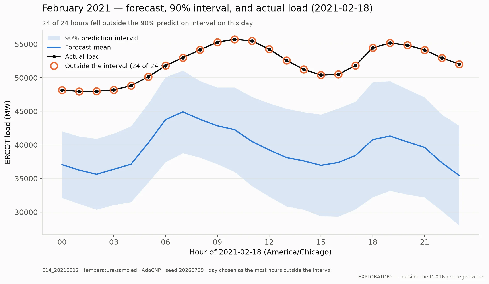
Advancing Frontiers of Energy Forecasting with Novel Methods
NETL SULI · Summer 2026
Probabilistic extreme-load forecasting on ERCOT with Adaptive Conditional Neural Processes. AdaCNP improved likelihood versus a CNP baseline, but both models were overconfident in the cold.
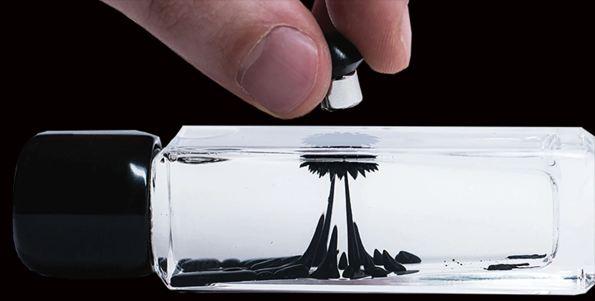
Smart Micro-Particle Manipulation Chamber
Completed · Senior Design Project
Hardware and electrical lead for a 9×9 electromagnet ferrofluid chamber: custom PWM control PCBs, power distribution, and Teensy-based actuation.
NFC Smart Business Card PCB
EECE 531 · Electromagnetic Field Theory
Credit-card-size passive NFC tag at 13.56 MHz with a planar trace antenna matched to an NXP NTAG NT3H1101 and field-harvested LED.
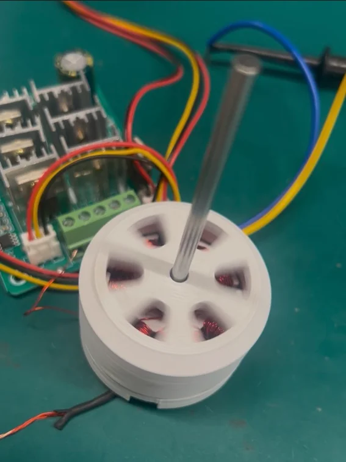
Three-Phase Brushless DC Motor
Personal Hardware Project
Fusion 360 rotor and stator, 3D-printed and assembled with neodymium magnets and a 12-coil, three-phase winding driven by a BLDC speed controller.
All Projects
Advancing Frontiers of Energy Forecasting with Novel Methods
DOE SULI internship at NETL, Summer 2026. Mentor: John Brewer. Day-ahead load forecasts are often least reliable during extreme weather, which is when operators most need trustworthy uncertainty. This project tested whether Adaptive Conditional Neural Processes (AdaCNP) improve extreme-load forecasting over a standard Conditional Neural Process on hourly ERCOT load from 2002 to 2026.
Evaluation used leave-one-event-out across 17 extreme cold events, with seven-day exclusion buffers, a 9:00 a.m. CT issuance cutoff, and documented load-shed hours removed from the primary metric. The pre-registered comparison found an AdaCNP advantage in Gaussian negative log likelihood (mean paired difference 0.459, 95% CI [0.108, 0.811], p = 0.014). The effect sat slightly below the study's minimum detectable effect and appeared only in the pre-registered configuration.
The operational result was calibration. A nominal 90% interval covered 96% of normal-period hours but only 63% of held-out extreme-event hours. Both models systematically underforecast demand while reporting high confidence, and coverage worsened as events got colder. That points to extreme-event calibration as a higher priority than further architecture comparison.
Views are my own and do not necessarily reflect those of the U.S. Department of Energy or NETL. View Report · View Presentation
SULI Technical Forum, Summer 2026 (starts at 14:35)
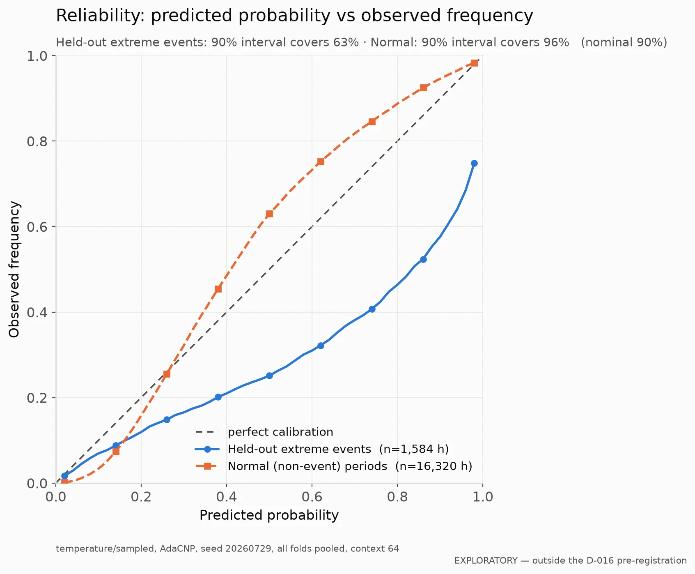
Reliability: 90% interval covers 96% of normal hours and 63% of extreme hoursFebruary 18, 2021: all 24 hours fell outside the 90% interval
Smart Micro-Particle Manipulation Chamber
Senior Design (ME SDP 115), completed May 2026. Team project for Dr. Kaiyan Yu: a macroscopic ferrofluid chamber that demonstrates how microparticles move under electromagnetic fields. I owned the entire hardware and electrical stack (power, magnet drive, PCB design, and microcontroller actuation). Teammates handled housing, tank chemistry, and the tablet UI.
The previous year’s 7×7 prototype could not lift ferrofluid above the first row of magnets. This year’s system uses an 81-magnet 9×9 array of 12 V JSP-1515 electromagnets behind a thinner glass tank so the fluid sits closer to the field. A tablet draws a pattern; a Raspberry Pi 5 forwards it to a Teensy 4.1, which PWM-drives each magnet so the ferrofluid can move both vertically and horizontally.
Electrical design: Nine row-control PCBs, each with a PCA9685 PWM driver and ULN2803 Darlington array, addressable over I²C at 0x41 to 0x49 via solder-jumper bits. A separate power-distribution board takes a MEAN WELL LRS-350-12 (12 V / 29 A) supply, fans 12 V out to the nine row boards (16.2 A design max), and steps down 5 V with a TSR 1-2450 for the Teensy and Pi. JST-VH connectors carry the 12 V rails with margin above the 1.8 A per-row load.
Ferrofluid demonstration: magnetic field manipulation
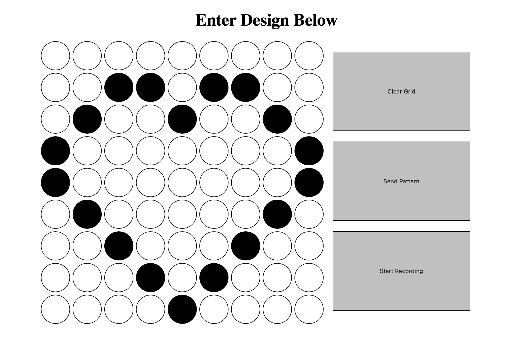
Tablet UI, 9×9 pattern grid
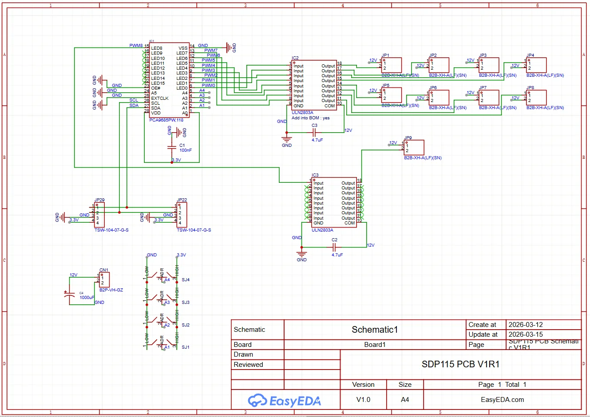
Electromagnet control PCB schematic
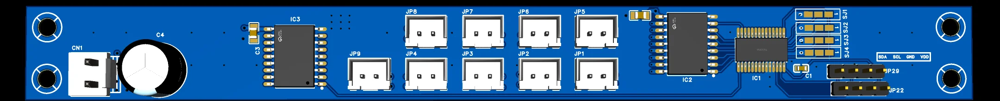
Electromagnet control PCB layout
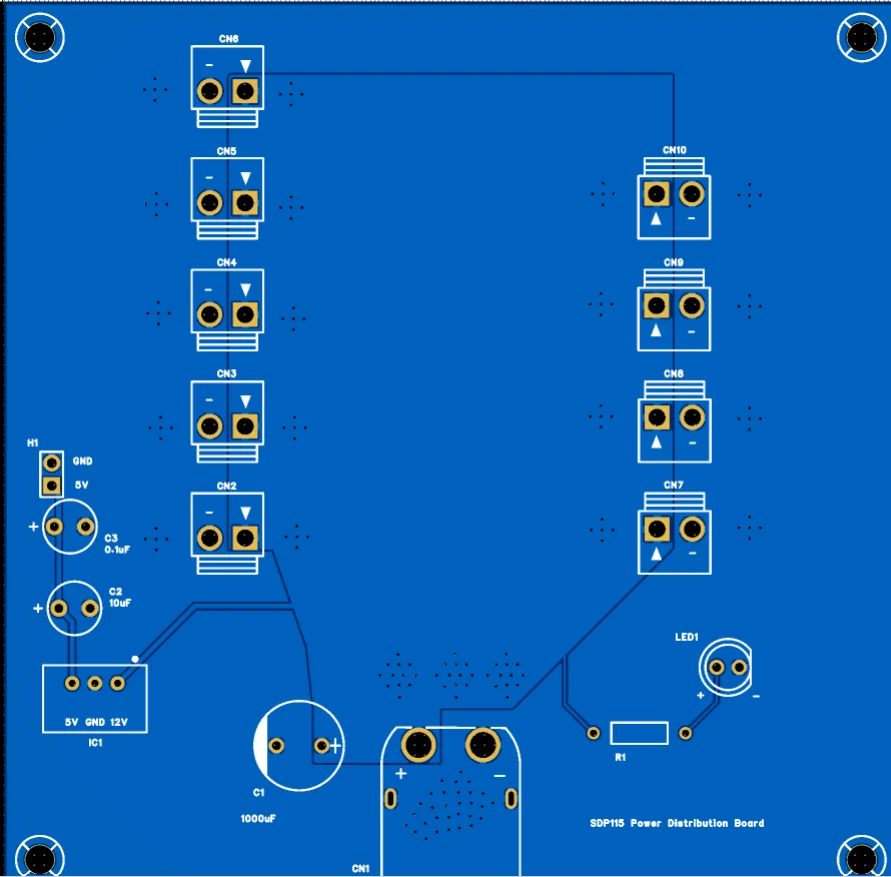
Power distribution PCB layout
NFC Smart Business Card PCB
EECE 531 Electromagnetic Field Theory final project. A passive NFC business card in CR80 credit-card dimensions: no battery, 13.56 MHz inductive coupling to a phone, LinkedIn (and contact info) on tap, plus an LED powered by energy harvested from the reader field.
The antenna is a 5-turn rectangular planar trace on 0.8 mm FR4, sized so its inductance lands on the NXP NTAG NT3H1101’s 50 pF on-chip capacitance. The LC target is about 2.75 μH at 13.56 MHz; the layout (Wheeler estimate with w = g = 0.3 mm) comes in at ~2.76 μH. Copper keepouts around the loop keep eddy currents from killing the coupling. Contact text is exposed ENIG through solder-mask apertures so the gold finish is the lettering.
The harvested rail feeds VCC through a 220 nF hold-up cap and a 47 Ω limiter into an 0805 LED. The board was fabricated and assembled as a working tag.
Schematic: NT3H1101, 13.56 MHz antenna, harvested LED
Three-Phase Brushless DC Motor
Personal hardware build: design a small outer-rotor BLDC from CAD through a spinning prototype. I modeled the rotor, stator, stator base, and base ring in Fusion 360, exported STLs, and had the parts printed at Binghamton’s MakerLab.
The rotor carries neodymium magnets in pockets around the inner rim. The stator has 12 coils, four per phase (A, B, C), so a rotating field from a three-phase brushless speed-controller board spins the magnet ring. Assembly was glue, magnet polarity, winding, and bringing it up on the bench with the controller.
Motor demonstration
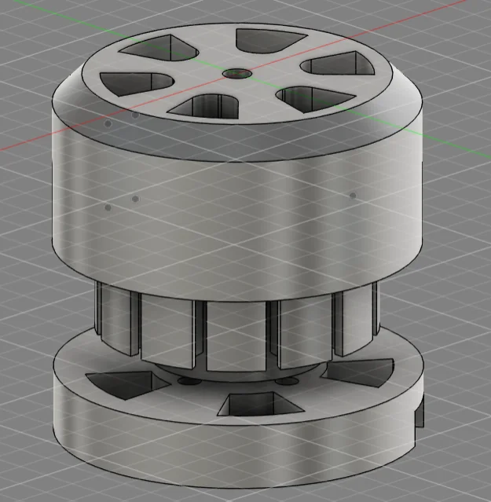
Fusion 360 assembly: rotor, stator, and base
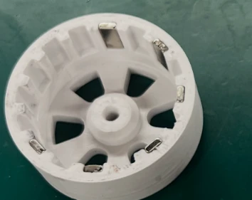
Rotor: neodymium magnets in the printed rimAssembled motor on the bench with the speed controller
Extreme-Weather Load Forecasting for PJM
EECE 529 course project. Short-term load forecasting usually looks fine on average and then falls apart in rare cold-weather peaks. This study compared a 24-hour persistence baseline, linear regression, random forest, and XGBoost on hourly PJM Mon Power / FirstEnergy zone load merged with NOAA ASOS weather from Morgantown (KMGW), held out over Winter Storm Fern (January 2026).
Random Forest won in aggregate (3.33% MAPE, 324.4 MW RMSE), but that advantage sits in nominal and ramp-up hours. During the storm peak, persistence was the most accurate model (1.34% MAPE). Tree ensembles were failing out of distribution. That pattern is why phase-aware, regime-specific forecasting is a better fit than one model across the whole storm window.
Metal Detection System using Colpitts Oscillator & FPGA
Junior Design Final Project: Create a metal detection system using off-the-shelf parts. Team consists of two Electrical Engineers (Georges and Jonathan Fuentes (myself)) and three Computer Engineers (Onkar, Ian and Giri).
Electrical Engineers: Built a three-channel analog front end with a 5 V regulator, three Colpitts oscillators each paired with an induction coil, and rectifier and filter stages that turned the RF into a steady voltage for the analog-to-digital converters of the FPGA board. The coils create a magnetic field, and nearby metal disturbs it, which shows up as a change in the DC output. The team modeled the circuit in LTSpice, assembled and labeled the hardware, and handed the Basys3 three clean voltages the code could use to judge position and signal strength.
Computer Engineers: Used memory-mapped GPIO and the XADC Wizard IP to implement the Basys3-side acquisition and display stack in Vitis C. In order to establish baseline voltages while animating the LEDs, a startup calibration procedure repeatedly samples VAUX_6/7/15 and averages the results. In order to determine lateral position (Left, Center-left, Center, Center-right, Right), ADC readings are converted to millivolts, normalized to a 0 to 10 strength scale per coil with tuned thresholds (40 mV left/center, 20 mV right), and compared in the main loop. Only stable detections are allowed to increase the per-region counters thanks to a debouncing scheme with a 100 ms stability window. In order to connect real-time sensing with clear visual feedback, the team also created an LED bar-graph routine and a multiplexed seven-segment driver (direction symbols plus counters).
Team Result: The system correctly detected 15/15 conductive objects in various combinations of position and distance from magnetic coils during the demonstration. View Report
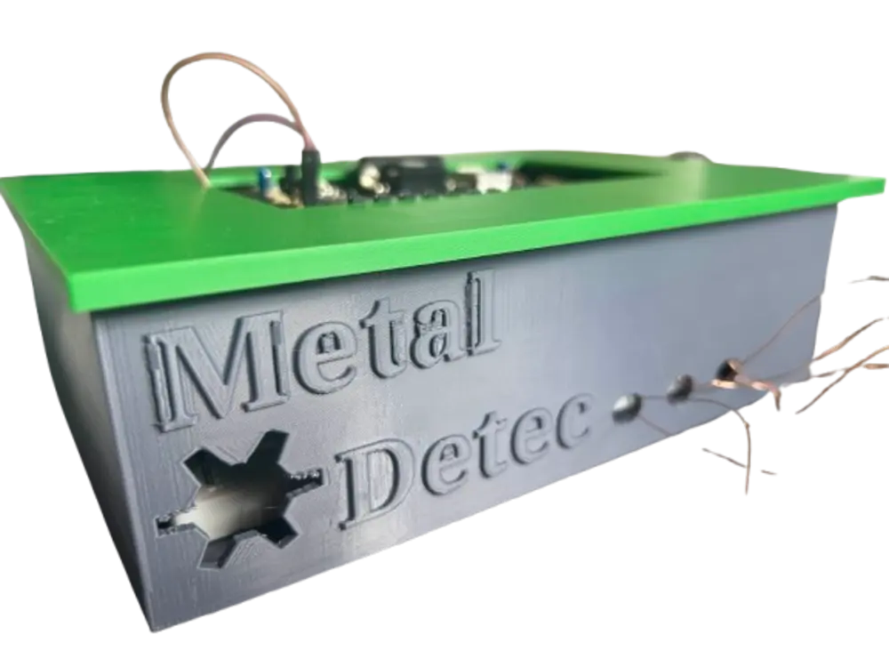
3D Printed Container
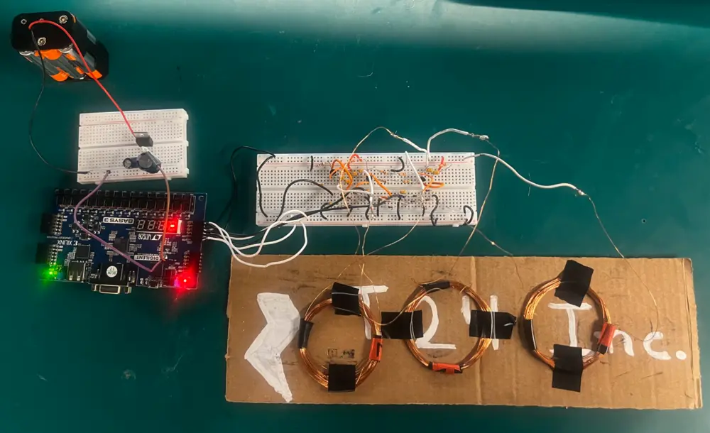
Full Physical System
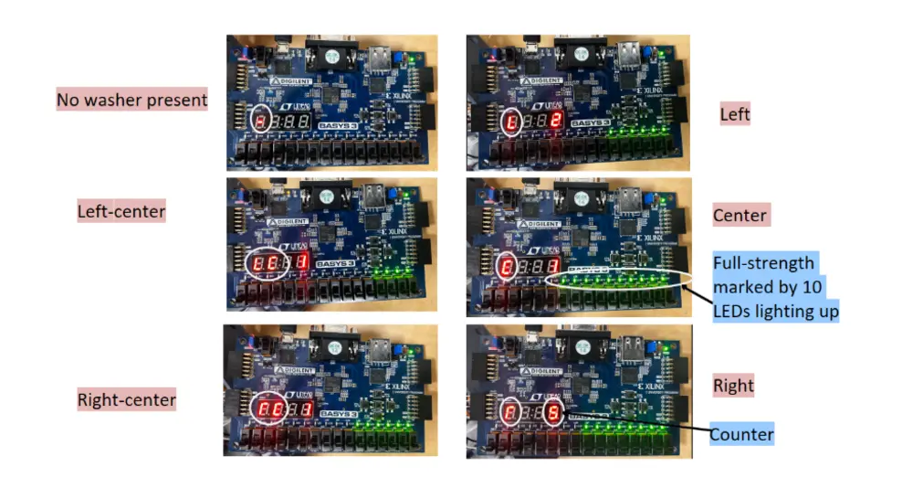
Labeled FPGA Display
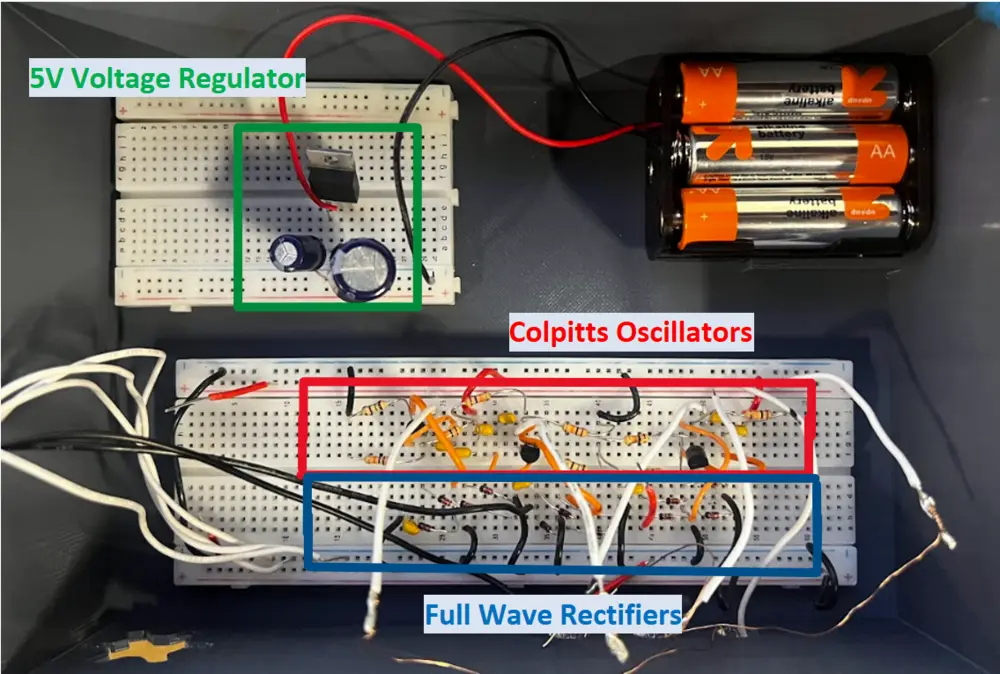
Self Contained System
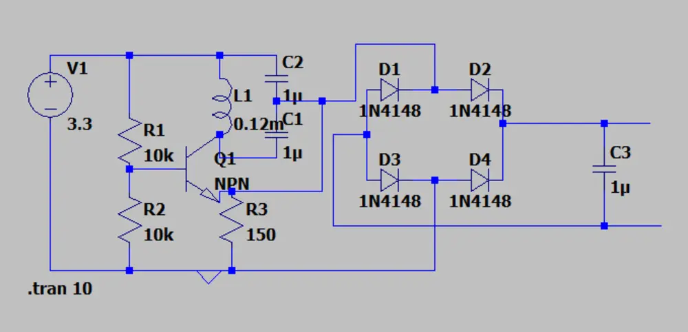
Single Circuit Schematic
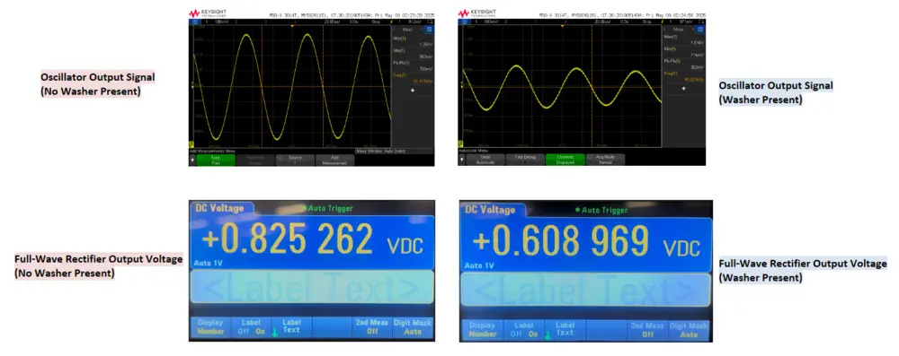
Signals Visualized
AM Radio Receiver with Variable Amplitude Output
We built a three-stage AM demodulator: a diode envelope detector, a small RC filter around 1.6 kHz, and a non-inverting OP474 stage set to about 3× gain with 100 kΩ/47 kΩ. For testing we used a 2 kHz carrier and a 100 Hz message from the function generator at 1 Vpp with ~80% modulation, then watched the detector and filter cleanly recover the message on the scope before the amp brought it up. We sketched it in LTSpice, wired it on a breadboard, and drove an 8 Ω speaker; the build worked as planned, with the main future tweak being a small nudge to the RC timing for even cleaner audio. View Report
Oscilloscope Output Graph Of Circuit MeasurementsLTSpice Circuit & SimulationConstructed Circuit